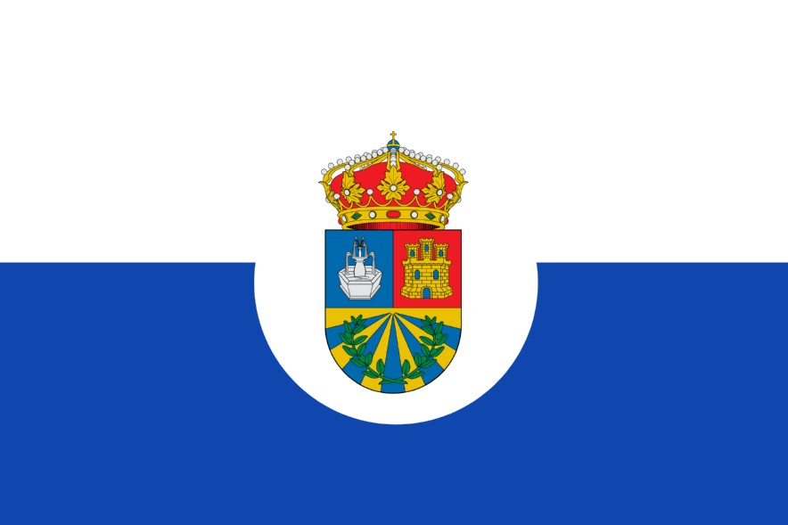
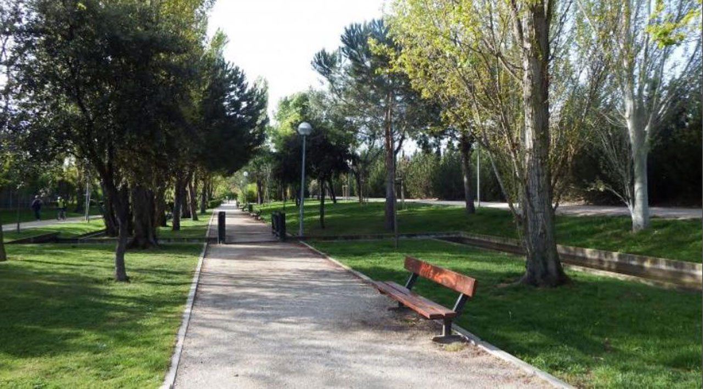
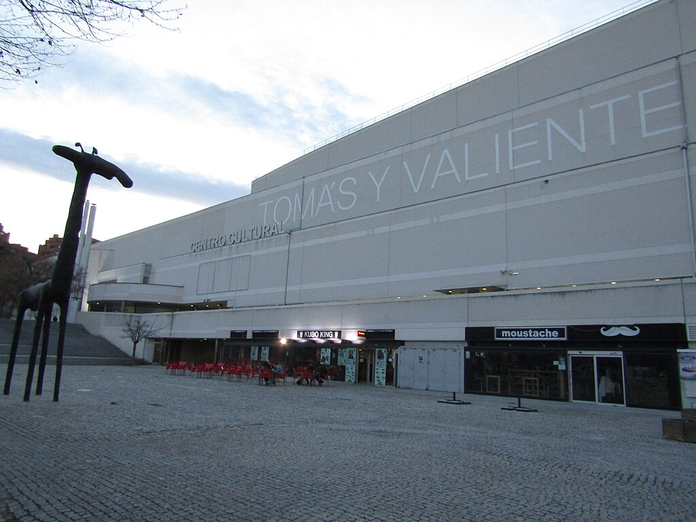
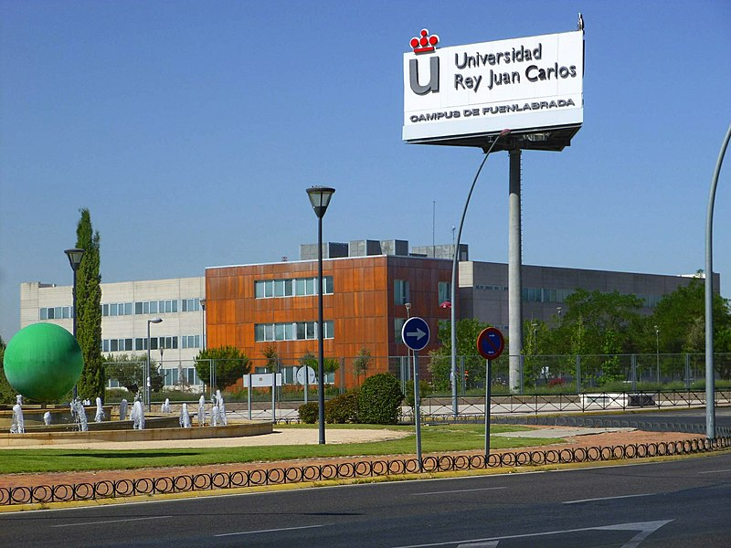
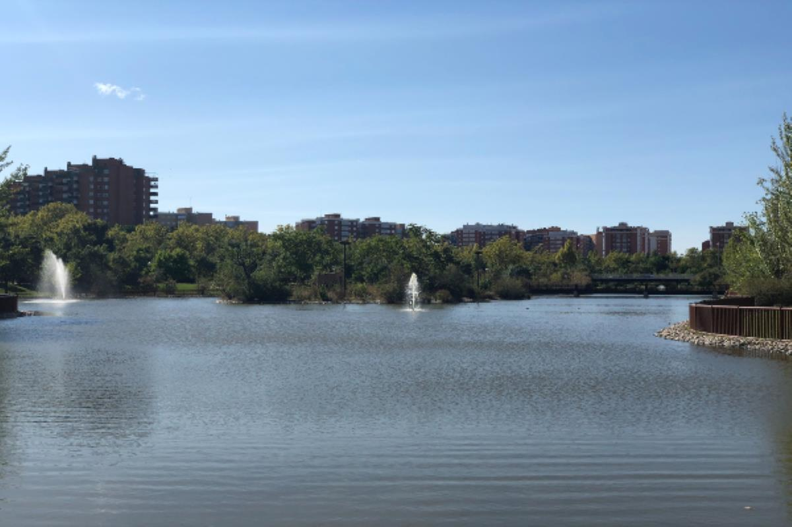
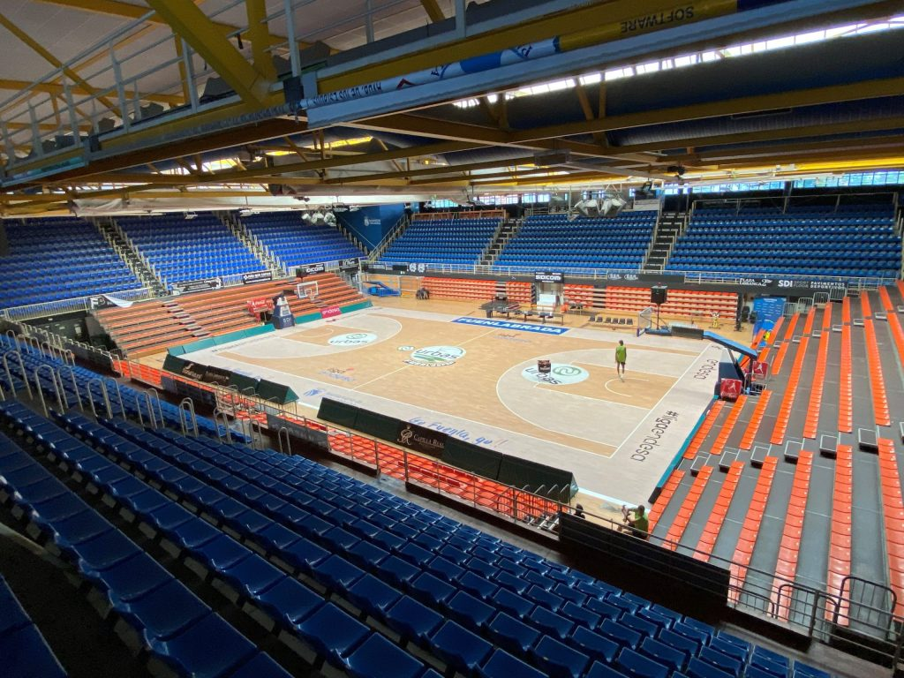
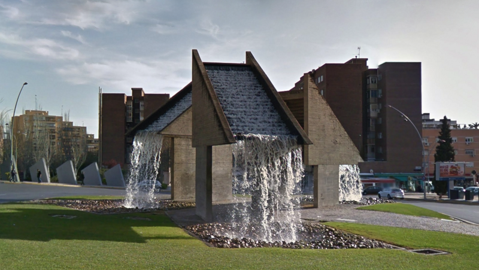
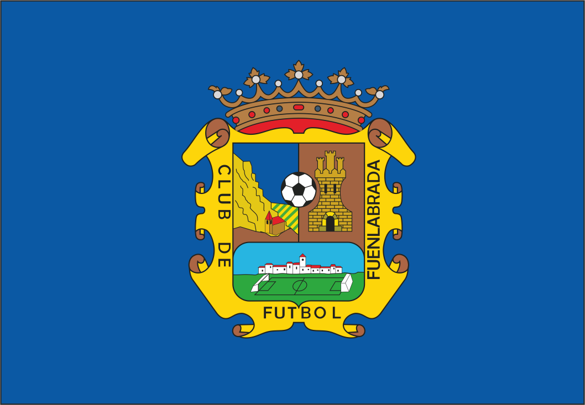

Descubre la ciudad de Fuenlabrada
Un lugar lleno de historia, cultura y oportunidades deportivas. Aquí encontrarás toda la información que necesitas para conocer los sitios más emblemáticos de la ciudad, su legado histórico y las actividades deportivas que hacen vibrar a sus habitantes.
Bandera
Dirección
Lugares
Parque de la solidaridad
Es uno de los espacios verdes más emblemáticos de la ciudad, ideal para el ocio y la recreación de sus habitantes. Con más de 20 hectáreas de extensión, ofrece amplias áreas de césped, zonas infantiles, lagos artificiales y senderos para caminar o montar en bicicleta. Además, el parque es conocido por su compromiso con la sostenibilidad, al integrar prácticas de gestión ambiental y ser un lugar donde se celebran actividades culturales y deportivas. Es un punto de encuentro para familias, deportistas y quienes buscan un rincón tranquilo en medio del entorno urbano.
Ubicación
Centro de arte Tomás y Valiente
Es un espacio dedicado a la promoción de la cultura y las artes. Inaugurado en 1994, cuenta con diversas instalaciones, como una biblioteca, varias salas de exposiciones, un teatro y un cine. Ofrece una amplia gama de actividades culturales, incluyendo exposiciones, talleres, representaciones teatrales y conciertos, siendo un punto de encuentro clave para los habitantes de la ciudad y sus alrededores. Su nombre rinde homenaje al juez y catedrático Tomás y Valiente, asesinado en 1996 por la banda terrorista ETA.
Ubicación
Universidad Rey Juan Carlos
En el Campus de Fuenlabrada se encuentran las facultades de Ciencias de la Comunicación, Ingeniería y Telecomunicaciones y Turismo. Se trata de un campus bastante amplio, con cuatro aularios, un edificio de control, otro de gestión y dos edificios-laboratorios, un estadio con cancha de fútbol, atletismo, tenis…además de una cafetería y una magnífica biblioteca con más de 30.000 volúmenes de libros, además de publicaciones periódicas, documentos audiovisuales y una mediateca.
Ubicación
Lago Loranca
También conocido como "El lago de los patos". Es un atractivo punto de interés situado en el barrio de Loranca, en Fuenlabrada. Este espacio natural destaca por su entorno tranquilo y su belleza paisajística, ofreciendo a los visitantes un lugar ideal para relajarse, pasear o disfrutar de actividades al aire libre. Rodeado de zonas ajardinadas y caminos peatonales, el lago es un refugio de paz en el que se pueden observar diversas especies de aves y disfrutar de la naturaleza sin salir de la ciudad. Además, el área cuenta con zonas recreativas cercanas, lo que lo convierte en un lugar popular para familias y residentes que buscan un respiro en medio del entorno urbano.
Ubicación
Pabellón Fernando Martín
onocido principalmente por ser la sede del equipo de baloncesto local, el Baloncesto Fuenlabrada, que compite en la Liga ACB. Inaugurado en 1991, el pabellón lleva el nombre del legendario jugador de baloncesto español Fernando Martín, en honor a su trayectoria y legado. Con una capacidad para más de 5.000 espectadores, el pabellón es el corazón del deporte en la ciudad, acogiendo no solo competiciones de baloncesto, sino también eventos deportivos, conciertos y actos culturales. Su ambiente vibrante y su cercanía con la comunidad lo convierten en un símbolo del deporte y el entretenimiento en Fuenlabrada.
Ubicación
Fuente de las escaleras
Se ha consolidado como el símbolo de una época en la que hubo grandes transformaciones y Fuenlabrada luchaba por ser una ciudad moderna y con infraestructuras. Construida en el año 1987 se encuentra situada en la confluencia de la calle Francia y avenida de las Naciones. Muchos habitantes la utilizan como punto de encuentro para grandes celebraciones.
Ubicación
Historia
Fuenlabrada se originó en el siglo XI como una pequeña aldea en la región de Madrid tras la Reconquista, ubicada estratégicamente en el camino entre Toledo y Madrid. Su nombre deriva de "fuente" y "labrada", haciendo referencia a una fuente cercana a tierras agrícolas, ya que la economía de la zona se basaba en la agricultura y el pastoreo. Durante siglos, fue una aldea rural sin gran relevancia, con una población estable dedicada principalmente al cultivo de cereales y olivos.
El crecimiento de Fuenlabrada comenzó en la segunda mitad del siglo XX, cuando la industrialización y la expansión de Madrid la convirtieron en un destino para migrantes que llegaban a la capital en busca de trabajo. Durante las décadas de los 60 y 70, su población creció rápidamente, transformándose en una ciudad dormitorio para trabajadores. Este desarrollo impulsó la construcción de nuevos barrios, servicios y equipamientos públicos.
En las décadas siguientes, Fuenlabrada consolidó su papel como una ciudad importante en la Comunidad de Madrid, con más de 190,000 habitantes en la actualidad. Ha diversificado su economía hacia la industria y los servicios, y cuenta con instituciones educativas y deportivas destacadas, como la Universidad Rey Juan Carlos y el Baloncesto Fuenlabrada. Hoy es una ciudad moderna, diversa y en constante crecimiento.
Clubes deportivos
Club de Fútbol Fuenlabrada
El CF Fuenlabrada es un equipo de fútbol fundado en 1975 en la ciudad de Fuenlabrada, Madrid. A lo largo de su historia, ha pasado por diferentes categorías del fútbol español, destacando su ascenso a la Segunda División en 2019, lo que marcó un hito importante para el club y la ciudad. El equipo juega sus partidos en el Estadio Fernando Torres, con capacidad para más de 5,000 espectadores, y ha sido un símbolo del crecimiento deportivo de Fuenlabrada. Aunque ha sido un club modesto en comparación con otros equipos de la Comunidad de Madrid, el CF Fuenlabrada ha logrado consolidarse en el fútbol profesional, manteniendo una base de aficionados leales y siendo un referente de la ciudad.
Club Baloncesto Fuenlabrada
El Baloncesto Fuenlabrada, fundado en 1983, es el equipo de baloncesto más representativo de la ciudad de Fuenlabrada, Madrid. Ha competido en la Liga ACB, la máxima categoría del baloncesto español, siendo conocido por su espíritu luchador y por formar a jóvenes talentos. El equipo juega sus partidos en el Pabellón Fernando Martín, con capacidad para unos 5,700 espectadores. A lo largo de su historia, ha tenido altibajos, pero ha mantenido su lugar entre los equipos destacados del baloncesto español. Además, el club tiene una fuerte conexión con la comunidad local, fomentando el deporte base y siendo un orgullo para los aficionados de la ciudad.